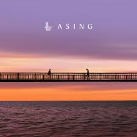

Tampar
Juicy Luicy
Entah sudah selasa yang ke berapa
Masih saja kau ada lekat di kepala
Hari ini janji esok mesti lupa
Tetapi hati tak tepati
Tampar aku di pipi
Biar sadar dan ku mengerti
Hujan samarkan derasnyaTutup air mata
Temani kecewaku yang telah lama
Berdosa kah ku berdoaMinta kau terluka
Dan tinggalkan dirinya
Hari ini janji esok mesti lupa
Tetapi hati tak tepati
Tampar aku di pipiBiar sadar dan ku mengerti
Hujan samarkan derasnya
Tutup air mataTemani kecewaku yang telah lama
Berdosa kah ku berdoaMinta kau terluka
Dan tinggalkan dirinya
Ho
Bukan ku tak berupaya
Berusaha
Hujan samarkan derasnya
Tutup air mataTemani kecewaku yang telah lama
Berdosa kah ku berdoaMinta kau terluka
Dan tinggalkan dirinya
Hujan samarkan derasnya
Tutup air mataTiga tahun tak terasa
Masih kau yang ada
Bodoh yang sebenarnya
Tampar aku di pipi
Sadarkan kau aku takkan terjadi